Hay 3 eventos que se añaden en el juego dependiendo como se desarrolla:
Si logras conseguir el pase de exoancuin del juego desbloquearas nuevos personajes por lo que conseguiras nuevas fechas de cumpleaños.
Matsuyuki
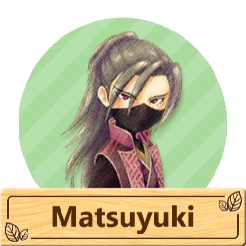
"¿Eres consciente de lo que pasará si juegas conmigo?".
Matsuyuki es el unico aldeano como personaje secreto que solamente se puede desbloquear si llegas a casarte con Iori en el juego. Este personaje llega a la Villa Oliva intentando atentar contra la vida de Iori. Tambien es conocido por maullar como un gato y permanece inmóvil junto a la casa de Iori, hablando la mayor parte del tiempo entre paréntesis.
Puede conocer mejor a este personaje consultando su bibliografia en la sección de personajes.
Ángela
"La madre de Jack. La propietaria del bazar de ciudad Oliva, que trabaja duro, ayuda a todos los habitantes del pueblo con su vasto conocimiento de los productos y el inventario. Disfruta de postres agridulces como el pudín de café".
Ángela es un personaje de Story of Seasons: Pioneers of Olive Town.
Ángela es la dueña actual de el bazar de ciudad Oliva. Ella trabaja detrás del mostrador cuando la tienda se encuentra abierta y en algunas ocaciones cuando ella se encuentra ocupada o esta indispuesta para trabajar ella suele dejar que su hijo Jack la cubra en el mostrador de la tienda. Ángela heredó el bazar de ciudad Oliva despues de la jubilación de sus padres, Jessie y Simon, quienes aún viven en la parte trasera de la tienda con Ángela y sus hijos, Jack y Cindy.
Le apasiona ayudar a los demás en lo que puede y siempre intenta tener exactamente lo que sus clientes necesitan. Es muy unida a su familia. Los martes, cuando la tienda está cerrada, visita a sus amigas Patricia y Sally en la casa de Patricia para conversar.
Nguyen y Dunhill
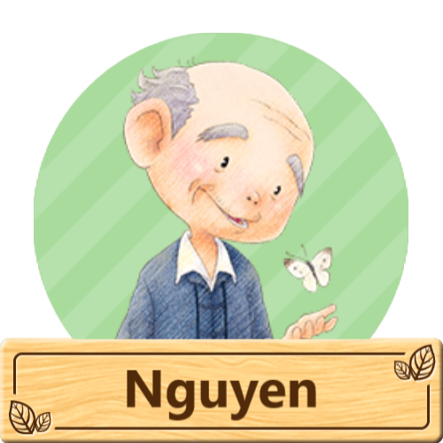
"El abuelo tranquilo de Linh. Dueño de la floristería. Ha cuidado de la ciudad Oliva desde sus humildes días de pionero. Un pescador veterano que recientemente ha cogido gusto por pescar sus presas con cebos misteriosos".
Nguyen es un personaje de Story of Seasons: Pioneers of Olive Town.
Es el propietario de una cálida floristería, que regenta junto a su nieta, Linh.
Al igual que Simon y el abuelo del jugador, Nguyen fue uno de los fundadores de la ciudad Oliva.
Además de su trabajo en la floristería, a Nguyen le gusta pescar y compite regularmente con Iori y Norman. También juega al ajedrez con Simon en la cafetería. Siempre es un feroz competidor en la competencia anual de pesca que se lleva a cabo cada invierno.
"Un señor mayor que vive en Cascada del viento con Hina. Solía ser granjero".
Dunhill es un personaje que regresa en Story of Seasons: Pioneers of Olive Town, originalmente era un personaje de Harvest Moon: A New Beginning. Se desbloquea tras conseguir el pase de expanción.
El ex alcalde de Echo Village, que quería volver a viajar, como lo hacía en su juventud, afirma que no le gusta quedarse en un mismo lugar durante demasiado tiempo y que le gusta estar en constante movimiento. En su día fue agricultor y ha tenido muchos trabajos a lo largo de su vida.
Él y Neil abandonaron juntos su aldea anterior y finalmente descubrieron Cascada del viento. Luego animó a otros, como Felicia, a que vinieran a visitarlo. Cuida de Hina, después de descubrir que se había colado en su equipaje cuando se iba de viaje.
Linh y Ludus
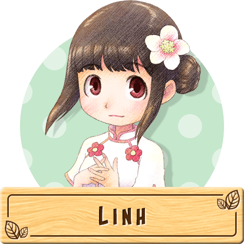
"Una joven que ayuda a su abuelo en su tienda. Una ávida lectora a la que le encanta prensar flores y usarlas como marcapáginas. Prefiere la dulzura sutil de los mangos a otras frutas".
Lihn es una candidata a matrimonio en Story of Seasons: Pioneers of Olive Town.
Una joven que ayuda a su abuelo Nguyen con su floristería. Es tímida e ingenua, pero se encariña con sus amigos y los quiere.
Al igual que el jugador, Linh es oriunda de la ciudad, pero se mudó a la ciudad Oliva para ayudar a cuidar a su abuelo y a su negocio. Aún mantiene contacto con sus amigos de la ciudad y, ocasionalmente, envía o recibe cartas y paquetes. Sabe mucho sobre flores y ama la naturaleza.
Fuera del trabajo, se lleva bien con Cindy y Mikey.
"Un joven que llegó a Islote del Crepúsculo con Tigre para expandir sus horizontes y experimentar diferentes culturas. Ama tanto los plátanos que bautizó su barco artesanal con su nombre".
Ludus es un candidata a matrimonio que regresa en Story of Seasons: Pioneers of Olive Town, originalmente era un personaje de Story of Seasons: Trio of Towns. Se desbloquea tras conseguir el pase de expanción.
Ludus es un hombre polifacético que arregló todas las casas de Islote del Crepúsculo para que pudieran habitarse cuando el grupo llegó. Disfruta arreglando cosas y siempre le gusta mantenerse ocupado.
Tigre es su aprendiz y protegido con quien entrena diariamente.
Podrás acceder a ciudad Oliva para participar en este festival a partir de las 10:00 horas. En este día, todos se reúnen en la plaza del pueblo en las afueras de la ciudad para buscar huevos. Este festival te mostrará deambulando por la ciudad y localizando los huevos que pintó Gloria. Cuantos más huevos encuentres, mejor será tu suerte para el año, al menos según el alcalde Víctor.
No buscarás huevos activamente, pero verás escenas en las que buscas huevos. Si le ha entregado el colgante de confesión a un candidato a matrimonio, puede pedirle que busque huevos con usted. Si no tienes una relación con nadie, puedes participar en la búsqueda de huevos con Mikey y Cindy.
Los candidatos a matrimonio de los DLC no asistirán a este festival a menos que usted esté casado con un candidato a matrimonio de DLC, y solo entonces participará su cónyuge del DLC.
Este festival finaliza a las 19:00 horas.
Jacopo y Moriya
"El hijo tranquilo de Víctor y Gloria. Trabaja en el ferry turístico, principalmente porque de esa manera puede acceder fácilmente a la ciudad. Le encanta la pizza y afirma que cualquier pizza es de tamaño personal siempre que creas en ti mismo".
Jacopo es un personaje de Story of Seasons: Pioneers of Olive Town.
Es un tipo tranquilo y el único hijo de Víctor y Gloria. Vive con sus padres en el ayuntamiento y es muy conocido por ser un poco holgazán, por lo que su padre tuvo que conseguirle un trabajo con Georg en el ferry. Jacopo adora su trabajo y respeta mucho a Georg como mentor, aunque todavía disfruta mucho de su tiempo libre.
"Un caballero mayor que viajó desde Tsuyukusa hasta Islote del Crepúsculo".
Moriya es un personaje que regresa en Story of Seasons: Pioneers of Olive Town, originalmente era un personaje de Story of Seasons: Trio of Towns. Se desbloquea tras conseguir el pase de expanción.
Él es el dueño de la tienda Ichiba. En su negocio, a menudo es severo, y a menudo se muestra duro con los demás. Como un viejo amigo del comerciante de té Ginjiro, a menudo pasan la noche en desacuerdo entre sí.
Moriya tuvo un novia a la que realmente amaba, pero ella le quitó su fortuna y se escapó con su dinero para nunca más volver, y la cosa se puso un poco difícil cuando Omiyo llegó a Tsuyukusa ya que ella le recordó a su ex prometida
Dosetsu
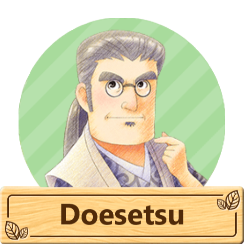
"El fiel y leal servidor de Iori. Ha servido a su amo durante muchos años. Un modelo de artes marciales y creativas. Una vez probó un plato con puerros en sus viajes y fue amor a primera vista".
Dosetsu es un personaje de Story of Seasons: Pioneers of Olive Town.
Dosetsu es el fiel y leal sirviente de Iori. Ha servido a su amo durante muchos años. Un modelo de artes marciales y creativas. Una vez probó un plato con puerros en sus viajes y fue amor a primera vista.
También actúa como tutor de Cindy y Mikey y con su ayuda organiza la búsqueda de setas cada año en otoño.
Felicia
"Una joven gourmet que llegó a Cascada del viento con Dunhill y los demás con la esperanza de descubrir nuevos alimentos. Le encantan las pastas y los mariscos, principalmente el pescatore".
Felicia es una candidata a matrimonio que regresa en Story of Seasons: Pioneers of Olive Town, originalmente era un personaje de Harvest Moon: A New Beginning. Se desbloquea tras conseguir el pase de expanción.
Trabaja como columnista gastronómica, aunque dice que no tiene el talento para convertirse en chef. Le encanta comer, así que cuando Dunhill le dijo que se iba de viaje a la ciudad Oliva, se unió con entusiasmo con la esperanza de probar nuevos platos. Muchos de sus sucesos más importantes incluyen intentar cocinar recetas antiguas y prohibidas hace tiempo.
Jack
"No trabaja en la tienda general por las tardes, pero ayuda por las noches. Le apasiona la ciudad Oliva y quiere convertirla en un lugar mejor. Adora las curiosidades que normalmente no se venderían en la tienda de su familia".
Jack es un candidato a matrimonio en Story of Seasons: Pioneers of Olive Town.
Jack es el nieto de Simon y Jessie, el hijo de Ángela y el hermano mayor de Cindy. Vive en la tienda general con su familia. Ocasionalmente ayuda a su madre con la tienda general, pero es consciente de su capacidad para tratar con los clientes. Jack tiene mucho tiempo libre y disfruta de caminar por la ciudad Oliva y ver películas. Siempre está tratando de pensar en ideas de souvenirs para vender en la tienda general.
Cuando la ciudad Oliva tenga suficientes ampliaciones, Jack abrirá un puesto en el muelle cerca del hotel. Tendrá en exposición las tallas de madera que ha realizado.
Jason
"El padre de Blaire. El bondadoso dueño del hotel. Quería ser pirata, pero no era lo suficientemente fuerte. Abrió su hotel con la esperanza de que los piratas se alojaran allí. Atesora mapas antiguos para poder usarlos para buscar tesoros algún día".
Jason es un personaje de Story of Seasons: Pioneers of Olive Town.
Es un marido y padre bondadoso que dirige el Gull's Rest Hotel. Es un gran trabajador que disfruta creando una buena experiencia para todos los huéspedes. Tiene una obsesión con los piratas.
Compite en la búsqueda anual de setas.
Beth
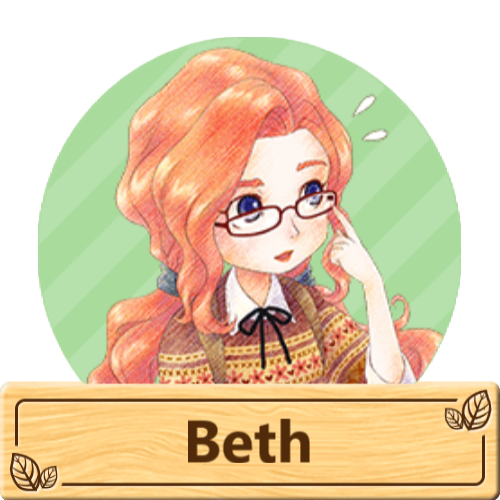
"La amiga de Gloria, siempre curiosa y coleccionista de objetos curiosos. Actualmente está excavando artefactos en la zona y enviándoselos a sus padres, que tienen una tienda de objetos curiosos. Cuando se trata de comidas favoritas, cuanto más picantes, mejor".
Beth es un personaje de Story of Seasons: Pioneers of Olive Town.
Trabaja en la recepción del museo y debido a que nesesita adquirir antigüedades decidio irse de su ciudad natal para quedarse en la ciudad Oliva donde podra conseguir varias antigüedades. Mientras se hospeda en la ciudad Oliva, vive en la Posada de la Gaviota. Ralph suele acompañar a Beth en su búsqueda de antigüedades en las zonas boscosas de la ciudad Oliva. Es amiga de Gloria y tiene una relación con Lars.
Si el jugador ha hecho donaciones al museo, como fotografías de animales o reliquias adquiridas por drenar los estanque o en la mina, Beth creará réplicas de las donaciones que se pueden comprar como decoración. Su familia tiene una tienda de antigüedades en su ciudad natal.
Dirígete a la ciudad Oliva después de las 10:00 am para participar en la carrera de mascotas. En este festival puedes participar inscribiendo a tu mascota para competir en el derbi anual de mascotas. Habla con Georg en la plaza de la ciudad y selecciona si quieres participar en la carrera con tu mascota o si en el caso que todavia no tienes mascota o no quieres usar una propia para participa puedes alquilar una mascota temporal.
Tu mascota competirá contra otros tres competidores. El objetivo de la carrera es ser la mascota más rápida en recuperar las pelotas del final de la pista y devolverlas a la línea de meta. La mascota que traiga dos pelotas primero será la ganadora. Durante la carrera, aparecerán botones sobre la cabeza de tu mascota. Al presionarlos, tu mascota liberará una ráfaga de velocidad. ¡Guau! Cuantos más corazones de amistad tenga tu mascota, mejor le irá durante la carrera.
Dependiendo en que puestos lleges podras resivir un trofeo de oro plata o cobre más una cantidad monetaria junto al trofeo, dicha cantidad varia dependiendo del trofeo
Mikey
"El hermano pequeño de Blaire. Como la mayoría de los niños de su edad, tiene dos objetivos principales en la vida: comer y jugar. Le encantan todo tipo de dulces, pero las golosinas caseras de Sally lo han malcriado, por lo que es un poco quisquilloso con la comida".
Mikey es un personaje de Story of Seasons: Pioneers of Olive Town.
Es un niño pequeño y travieso al que le encanta comer dulces. Siempre evita hacer sus deberes y prefiere estar jugando. Le gusta atrapar insectos y hacerle bromas a su madre y a su hermana. A menudo juega con Cindy, que tiene su misma edad. Dosetsu le da clases particulares y le gusta ayudar a Linh a regar las flores que hay fuera de la floristería.
Él organiza la búsqueda de hongos con la ayuda de Cindy cada año y también compite en el Derby de mascotas.
Norman
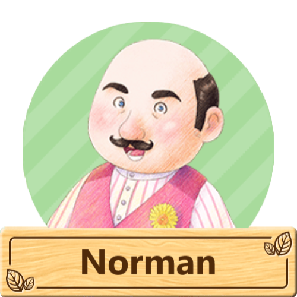
"El simpático padre de Laura. Dueño de la tienda de comestibles. Ha tenido una constitución frágil durante muchos años, pero el aire limpio de la ciudad Oliva ha ayudado a mejorar su condición. Le gustan todo tipo de productos frescos, pero las manzanas son sus favoritas".
Norman es un personaje de Story of Seasons: Pioneers of Olive Town.
Es el dueño de la tienda de comestibles de la ciudad Oliva. Solía tener mala salud hasta que se mudó a la ciudad Oliva, donde desde entonces ha visto cierta mejoría. Es muy cercano a su esposa y a su hija, aunque su esposa trabaja en la ciudad la mayor parte de la semana.
También es un pescador apasionado que pasa sus días libres pescando. Organiza y compite en el Concurso de Pesca de cada invierno.
Laura y Raeger
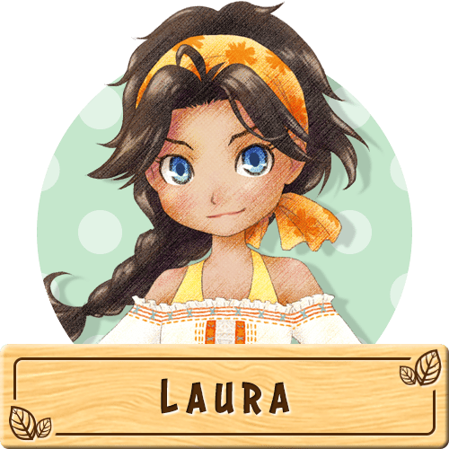
"Una guía turística que ayuda a su padre en la tienda de comestibles cuando puede. Le encanta el mar desde que era joven en la ciudad y le encanta pescar. Nunca le dice que no a un pez grande ni a unas aceitunas".
Laura es un candidata a matrimonio en Story of Seasons: Pioneers of Olive Town.
Una hermana confiable con una personalidad relajada. También es muy sociable y extrovertida, lo que la hace ideal como guía turística de la ciudad Oliva. Realmente valora a su familia y apoya a su débil padre, ayudándolo con su trabajo en la tienda de comestibles siempre que puede.
A ella le encanta el océano y le encanta pescar, al igual que a su padre.
Como guía turística, Laura administrará el perfil en línea del jugador y también mantendrá una hoja de asistencia para otros jugadores que visiten al jugador y otras funciones relacionadas con la red.
"Un chef cuyo restaurante estaba cerrado temporalmente. Decidió venir a Oasis Terracota para cambiar de aires y explorar nuevas cocinas. Le fascinan los ingredientes raros, como las cosechas doradas".
Raeger es un candidata a matrimonio que regresa en Story of Seasons: Pioneers of Olive Town, originalmente era un personaje de Story of Seasons. Se desbloquea tras conseguir el pase de expanción.
Es un excelente chef a tal punto de tener su poropio restaurante en su tierra natal pero lo cerró temporalmente para poder viajar e inspirarce en la elavoracion de nuevos platos. Es muy reservado por lo que no le gusta hablar de sí mismo.
Karina
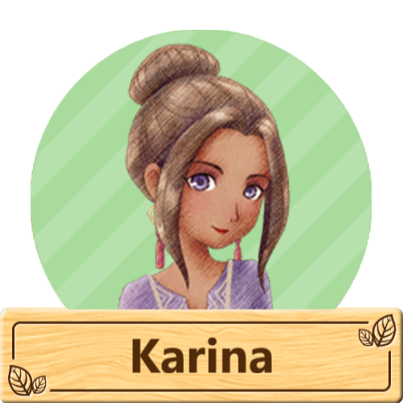
"Una estilista carismática que se especializa en cambios de imagen totales. Llegó a la ciudad Oliva en busca de un nuevo entorno para satisfacer sus necesidades creativas. Una firme creyente en la combinación de sabores de aguacates y salsa de soja".
Karina es un personaje de Story of Seasons: Pioneers of Olive Town.
Karina es peluquera y maquilladora y se mudó recientemente a la ciudad Oliva. Antes de que se construya el salón, estará desempleada y se alojará en el hotel. Cuando Olive Town se amplíe para incluir un salón, Karina se mudará allí para instalar el local.
Karina confeccionará ropa y accesorios para el jugador si este puede proporcionarle los materiales necesarios. Si el jugador ayuda a ampliar su salón, Karina invitará a Jeanne a que la ayude a administrar su negocio. Las dos mujeres vivirán y trabajarán juntas en el salón.
Es una gran trabajadora que pasa toda su semana laboral en el salón. Es buena amiga de Reina y pasa tiempo con ella en su día libre en el salón.
Giorgio
"Un hombre que vive en Oasis Terracota. Fue el carismático dueño de una granja en Oak Tree Town".
Giorgio es un personaje que regresa en Story of Seasons: Pioneers of Olive Town, originalmente era un personaje de Story of Seasons. Se desbloquea tras conseguir el pase de expanción.
Es un buen amigo de Marian y llegó al Oasis Terracota a petición suya. Viven juntos y continúan cultivando su "Alianza de los Soñadores Hermosos". Dirige una granja muy exitosa, mundialmente famosa en su pueblo natal. Su granja está al cuidado de un peón de confianza hasta su regreso.
Le encanta todo lo bello, como las joyas y las flores. Espera encontrar el lugar perfecto para construir un hogar permanente para él y su prometida.
Camina hasta la ciudad Oliva a las 10:00 am y visita la zona de la playa. Sally, Manuela y Patricia han preparado un juego de lanzamiento de barriles junto al muelle. En este juego, hay un recorrido de distancia en el agua, donde puedes lanzar barriles desde el muelle. El objetivo es golpear el lanzador de barriles con la fuerza suficiente para que el barril caiga en el área de la meta marcada en rojo. Ganarás la mayor cantidad de puntos por llegar al lugar correcto, menos puntos por hacer que tu barril caiga en el área azul y 0 por caer en el área gris.
Cada juego te coloca en tres rondas contra los demás competidores. En cada ronda, tienes tres oportunidades de hacer que el cañón aterrice en el punto ideal. Obtienes más puntos por aterrizar en las zonas roja o azul a medida que avanzan las rondas, ya que la última ronda es la más difícil para alcanzar el punto óptimo. El barril siempre ganará 0 puntos si cae en el área gris fuera de los límites. Tiened un total de tres intentos que se convertirán en el puntaje de esa ronda. Gana más puntos en las tres rondas para ganar el festival. También puedes realizar una ronda de práctica si quieres probar el concurso antes de participar.
Emilio
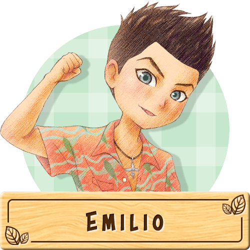
"Se levanta temprano todos los días con Marcos y Raúl para ir a pescar. Adora la naturaleza exuberante e intacta que rodea Olive Town. Nunca se cansa de comer mariscos en su vida".
Emilio es un candidato a matrimonio en Story of Seasons: Pioneers of Olive Town.
Emilio es un pescador tranquilo que vive con su familia en una casa en la playa. Le apasiona ser pescador y sabe cómo hacer reír a la gente. Le encanta el mar y tiene un gran talento para tocar la guitarra. Para Emilio, el océano ha sido como su patio trasero desde que tiene memoria y planea que siga siendo así para el resto de su vida.
Le gusta competir en el torneo de pesca cada año.
Ralph
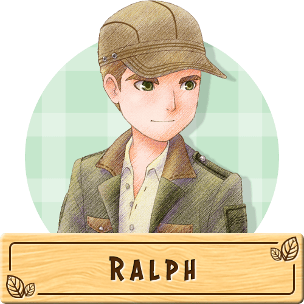
"Un guardabosques que guía a otros a través del bosque y observa la vida silvestre local. Solía jugar al fútbol en un equipo escolar y todavía entrena para mantenerse en forma. Disfruta de comidas sencillas como pan y sopa".
Ralph es un candidato a matrimonio en Story of Seasons: Pioneers of Olive Town.
Un guardabosques que protege la vida silvestre y ayuda a preservar la naturaleza que rodea a la ciudad Oliva. Guía a los turistas a través del bosque de manera segura, así como a los residentes de la ciudad Oliva, como Beth, que va al bosque en busca de artefactos. Es una persona tranquila y serena que se desenvuelve bien en situaciones de crisis, lo que lo convierte en un muy buen guardabosques. Disfruta de su trabajo y le encanta estar al aire libre. Tiene un gran respeto por los animales y quiere preservar el bosque natural tanto como sea posible.
Solía jugar al fútbol, pero tuvo que dejarlo por una lesión. Sin embargo, todavía le gusta mantenerse en forma. Trabaja en la estación de guardabosques, pero vive con su padre Nigel en la carpintería y tambien compite en el evento Verbena Estival todos los años.
Visite viudad Olivo después de las 10:00 am para ver a todos reunidos cerca de la playa. Durante este festival, podrás ver el espectáculo del cielo, ya sea solo o con tu pareja. Si estás solo, habla con Nigel para iniciar las festividades. Si tiene a alguien con quien trabaja, hable con él y pregúntele si le gustaría ver los fuegos artificiales con usted. Al confirmar su selección los fuegos artificiales comenzarán inmediatamente.
El festival pasará a ser de noche para que puedas ver los fuegos artificiales iluminando el cielo. Si tienes a alguien que te acompañe, podrás conversar un rato con esa persona durante el espectáculo.
Los candidatos a matrimonio DLC no asistirán a este festival a menos que estén casados con un candidato a matrimonio DLC, y solo entonces participará su cónyuge DLC.
Este festival finaliza a las 9:00 pm.
Marcos
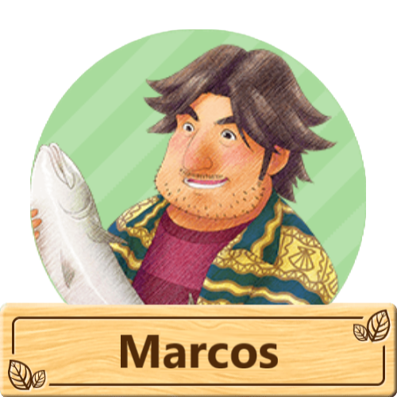
"El padre de Emilio. Proviene de una familia de pescadores y él mismo se convirtió en uno de ellos. Después de casarse con su amiga de la infancia Maneula, los dos se mudaron a Villa Oliva. Naturalmente, a él le encantan los mariscos".
Marcos es un personaje de Story of Seasons: Pioneers of Olive Town.
Marcos es el esposo de Manuela y es la padre de Emilio. Marcos es un pescador tranquilo y amante del mar que enseña a pescar tanto a Emilio como a Raúl. Para Marcos, Raúl es considerado como un miembro más de su familia a pesar de ser un pariente por lo que suele pasar tiempo con él. Marcos compite en el evento Verbena Estival en el verano todos los años y tambien es el encargado que encender los fuegos artificiales para el espectáculo anual de fuegos artificiales.
Georg
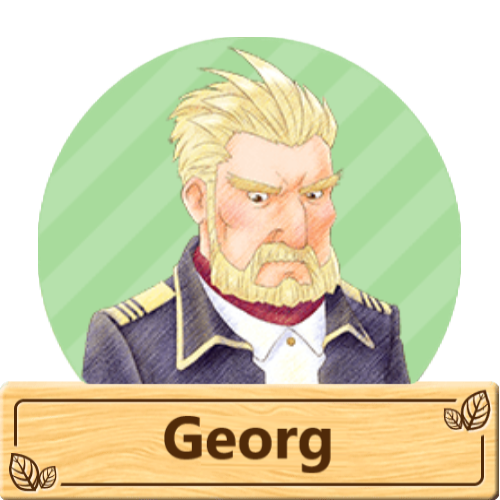
"El padre de Damon y Bridget. El capitán del ferry turístico, un hombre sensato. Se enorgullece de su trabajo, conectando la ciudad y Villa Oliva con su barco. Desde que era joven, ha comido huevos para mantenerse sano y en forma".
Georg es un personaje de Story of Seasons: Pioneers of Olive Town.
Georg es el esposo de Bridget y es padre de Bridget y Damon. Es un hombre de pocas palabras que opera el ferry de pasajeros que lleva a la gente a Olive Town. Ha contratado a Jacopo como su asistente. Aunque no son la pareja ideal, Georg se ha encariñado bastante con Jacopo y agradece la ayuda adicional.
Le encanta estar en el agua durante el día, pero también pasar tiempo con su familia en casa por las noches. Aunque no ayuda directamente en la tienda de animales, se demuestra que le gustan mucho los animales. Organiza el Pet Derby anual cada verano.
Hina
"Una joven que vive en Cascada del viento con Dunhill. Le encantan las fresas".
Hina es un personaje que regresa en Story of Seasons: Pioneers of Olive Town, originalmente era un personaje de Harvest Moon: A New Beginning. Se desbloquea tras conseguir el pase de expanción.
Hina está emocionada por sus primeras vacaciones en Cascada del viento lejos de sus padres, especialmente porque su familia tiene una agencia de viajes, ¡pero ella nunca ha viajado! Para poder venir a Cascada del viento con los demás, se escondió dentro del equipaje de todos. En lugar de enviarla de regreso a casa cuando llegaron, Dunhill aceptó cuidarla.
Es un maestro del escondite y le encantan los dulces.
Reina
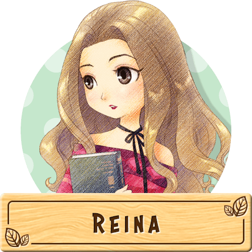
"Conocio a Gloria cuando era estudiante y la invitaron a trabajar en el museo. Tiene conocimientos sobre objetos antiguos y le encanta evaluar tesoros hasta el punto de perder la noción del tiempo".
Reina es un candidata a matrimonio en Story of Seasons: Pioneers of Olive Town.
Una joven que trabaja y vive en el museo. Aunque Reina es muy relajada, se toma en serio su trabajo en el museo y le encanta aprender todo lo que pueda sobre los artefactos desconocidos. Está muy bien informada sobre las exhibiciones y recibe elogios de la directora del museo, Gloria, quien confía mucho en ella. Es muy cercana a Gloria y también pasa tiempo con su amiga Karina cuando el museo está cerrado los jueves.
Ella está a cargo de los servicios de tasación del museo y puede tasar los objetos desconocidos que el jugador obtenga para ella. Habla con Reina detrás del mostrador del museo mientras esté abierto. Si hay un artefacto en la bolsa del jugador, ella se ofrecerá a tasarlo.
Bridget
"Una joven amable que trabaja en una tienda de animales. Se preocupa mucho por su familia. Los animales del bosque son sus queridos amigos. Le encanta beber leche fresca y deliciosa".
Bridget es un candidata a matrimonio en Story of Seasons: Pioneers of Olive Town.
Bridget es la hermna mator de Damon e hija de Patricia y Georg. ¡Bridget ama a todos los animales, domesticados o salvajes! y a menudo se preocupa por el futuro de su hermano menor Damon, Bridget es una chica muy trabajadora y siempre siempre mantiene una sonrisa en su rostro y un amigo animal cerca.
Bridget trabajará en la tienda de animales de su familia y estará a cargo de las mascotas y monturas que el jugador puede comprar. Tambien compite en el festival de derbi de mascotas.
Lisette
"Una joven que llegó a Islote del Crepúsculo con Moriya, inspirada por los cuentos de una princesa que conoció a su verdadero amor en una aventura. Tiene pasión por los duraznos y adora la mermelada".
Lisette es una candidata a matrimonio que regresa en Story of Seasons: Pioneers of Olive Town, originalmente era un personaje de Story of Seasons: Trio of Towns. Se desbloquea tras conseguir el pase de expanción.
Es una chica alegre que trabaja como florista en Thousand Bouquets, Westown . Gracias a la influencia de sus padres, se familiarizó con las plantas desde pequeña y disfruta de la jardinería. >Es una ávida lectora que disfruta de todo tipo de literatura. Un personaje de un libro la inspiró a querer viajar.
Iris
"Novelista de numerosas obras famosas. Un auge de admiradores entusiastas la llevó a mudarse a Oasis Terracota para no molestar a sus vecinos. Le encantan los perfumes frutales, que usa a diario".
Iris es una candidata a matrimonio que regresa en Story of Seasons: Pioneers of Olive Town, originalmente era un personaje de Story of Seasons. Se desbloquea tras conseguir el pase de expanción.
Iris es una novelista con fans en todo el mundo. Llegó a Oasis Terracota para desconectar de algunos de sus fans más obsesionados y, con la esperanza de obtener nuevas ideas para sus próximos libros. Quienes la conocen la perciben como una mujer muy elegante y misteriosa.
Lovett
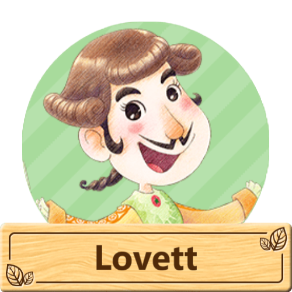
"Un bon vivant que siempre está a la caza de platos raros y deliciosos. Escribe columnas especiales sobre gastronomía en revistas sobre todos los platos que ha probado y tiene seguidores en todo el mundo".
Lovett es un personaje de Story of Seasons: Pioneers of Olive Town.
Es un aristócrata gourmet que viaja por todo el mundo probando comida. Su mente siempre está pensando en comida, sin importar la hora del día. Va del bistró, la cafetería y su casa todos los días.
Si el jugador visita la casa de Lovett, tendrá una lista de platos que está buscando. Si el jugador completa estas solicitudes, Lovett lo recompensará con una amplia variedad de artículos.
Se trata de un festival competitivo en el que los participantes recolectan setas. El objetivo no es recolectar la mayor cantidad de hongos de juguete, sino recolectar hasta 20 hongos que valgan la mayor cantidad de puntos. Ingrese a la ciudad Oliva entre las 10:00 am y las 7:00 pm, luego hable con Dosetsu para unirse a la diversión de los hongos. Cindy y Mikey han escondido pequeños hongos de juguete para que los encuentren los participantes. Tendrás 70 segundos para cazar los hongos de juguete de mayor valor antes de que los otros tres competidores los encuentren. Los hongos estarán escondidos en el área de la plaza, el patio de juegos y al norte en el bosque. No encontrarás ninguno en otras partes de ciudad Oliva, como las calles inferiores o la playa.
Hay tres colores de setas de juguete: rojo, amarillo y azul. Cuantos más puntos valga el hongo, menos encontrarás.
Puedes recoger un máximo de 20 setas. Como solo hay unos pocos hongos rojos y amarillos, intenta localizarlos primero. Luego, recoge los pequeños azules para llenar tu límite de 20 hongos.
Sydney y Tigre
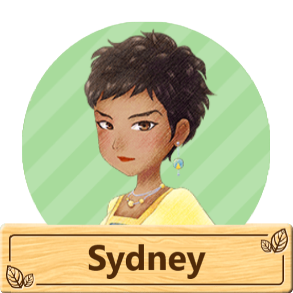
"La madre de Laura. Trabaja como abogada defensora en la ciudad. Está casada con el amor de su vida, Norman. Espera poder establecerse algún día de forma permanente en la ciudad Oliva con su familia. Le encanta cocinar con uvas".
Sydney es un personaje de Story of Seasons: Pioneers of Olive Town.
Es una abogada talentosa que ejerce como defensora fuera de la ciudad Oliva. A pesar de que está lejos de su familia tan a menudo, sigue estando cerca de su hija y su marido y mantiene una relación cercana con ambos.
Ella sólo está en la ciudad Oliva los lunes y durante los festivales.
"Un niño que llegó a Islote del Crepúsculo con Ludus, animado por su abuelo, Haulani. Su comida favorita es el pescado fresco, sobre todo el agua de mar".
Tigre es un personaje que regresa en Story of Seasons: Pioneers of Olive Town, originalmente era un personaje de Story of Seasons: Trio of Towns. Se desbloquea tras conseguir el pase de expanción.
Es el nieto de Haulani, Tigre, habla con cortesía con todos. Sueña con ser tan fuerte y confiable como su abuelo. A veces le cuesta integrarse con los alegres aldeanos de Lulukoko. Admira a Ludus como a un hermano mayor.
Patricia
"La madre de Damon y Bridget. Dueña de la tienda de animales. Ha cuidado ganado desde que era niña, por lo que es una experta en el cuidado de animales. Le encanta la miel y la anhela a diario, además de todas sus golosinas para la hora del té".
Patricia es un personaje de Story of Seasons: Pioneers of Olive Town.
Patricia es la esposa de Georg y es madre de Bridget y Damon. Dirige la tienda de animales "La casa de las patitas" con su hija Bridget. Ella se encarga de las ventas de todo el ganado y las aves de corral, así como de los kits de cría. Ama a los animales y se dedica a cuidarlos y brindarles el mejor cuidado posible.
Patricia invitará a sus amigas Sally, Ángela y Manuela a su casa una vez a la semana en su día libre. Compite cada año en el derbi de mascotas y ayuda a Manuela con el Verbena Estival.
Misaki
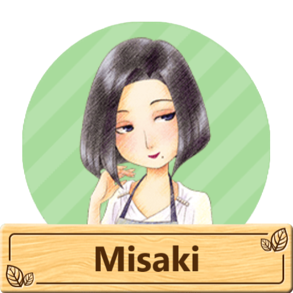
"La apacible dueña del restaurante. Es una gran oyente y su presencia tranquilizadora hace que sea fácil hablar con ella; muchos residentes acuden a ella en busca de consejos. Cocina platos de todos los países, pero prefiere adobos que realcen los sabores de la comida local".
Misaki es un personaje de Story of Seasons: Pioneers of Olive Town.
Es la dueña del restaurante del pueblo. Una mujer misteriosa que es muy sabia pero que no habla mucho de sí misma. Está llena de buenos consejos y siempre está pendiente de los demás, en particular de Blaire, por quien se preocupa constantemente.
Ella es una cocinera excelente y aparentemente puede satisfacer a cualquiera con su cocina, ¡incluso a un gourmet de clase mundial como Lovett!.
Simon
"El abuelo de Jack. Uno de los pioneros originales de la ciudad Oliva. Desde que Ángela heredó la tienda de comestibles, está aprovechando al máximo su jubilación. En su opinión, los platos sencillos como el pudín son inmejorables".
Simon es un personaje de Story of Seasons: Pioneers of Olive Town.
Es uno de los pioneros que originalmente ayudó a construir la ciudad Oliva, junto con su esposa Jessie, Nguyen y el abuelo del jugador. Alguna vez fue el dueño del bazar de ciudad Oliva de la ciudad con su esposa, pero desde que envejeció decidió jubilarse y ceder la propiedad a su hija, Ángela.
Aunque está jubilado, a Simon todavía le gusta ayudar cuando puede en la tienda. Sigue siendo muy buen amigo de Nguyen y le gusta jugar al ajedrez con él. Suele verse por la ciudad con Jessie, y los dos suelen ir al mirador en el bosque para disfrutar de la vista.
Sabe mucho sobre la ciudad Oliva y siempre da buenos consejos. Vive con su esposa, su hija y sus nietos en el bazar.
Los residentes de la ciudad Oliva se reunirán este día para expresar su agradecimiento por las bendiciones de la naturaleza que cubren su ciudad. Entre las 10:00 am y las 7:00 pm, llegarán a ciudad Oliva y todos estarán en la plaza, donde estarán entusiasmados por encender las linternas de papel que planean lanzar al cielo. Si ya se ha confesado con un candidato para el matrimonio y está saliendo con él o ella (o incluso se ha casado), hable con esa persona en la plaza para invitarla a encender las linternas con usted.
Cuando estés listo, habla con Simon en el centro de la plaza. La hora cambiará a la noche y todas las linternas se iluminarán con fuego.
Los candidatos a matrimonio del DLC no asistirán a este festival a menos que usted esté casado con un candidato a matrimonio del DLC, y solo entonces participará su cónyuge de DLC.
Este festival termina a las 19:00 h. Por suerte, las linternas de fuego no provocarán ningún incendio en el juego.
Blaire
"Una camarera del bistró que respeta profundamente a su dueña, Misaki. Sueña con triunfar en la ciudad como actriz. Siempre está al día de las tendencias de moda y disfruta coleccionando joyas como pasatiempo".
Blaire es un candidata a matrimonio en Story of Seasons: Pioneers of Olive Town.
Una chica alegre y vivaz que trabaja como camarera en el bistró de Misaki . Admira y respeta a Misaki, aunque a veces siente que Misaki la hace pasar un mal rato. Solía vivir en la ciudad cuando era estudiante y prefiere vivir allí a vivir en un lugar pequeño como la ciudad Oliva.
Desea volver a la ciudad algún día para perseguir su sueño de convertirse en una actriz famosa. Vive en el hotel con su familia.
Manuela
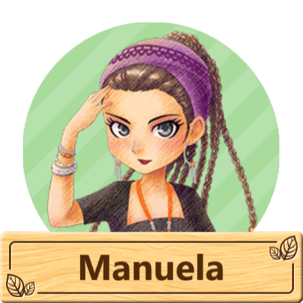
"La madre de Emilio. Nació y creció en un pueblo portuario conocido por su pesca. Está casada con Marcos, su hijo de la infancia. Las piñas son sus favoritas y le encantan los platos que las incorporan, como la mermelada o las frutas con leche".
Manuela es un personaje de Story of Seasons: Pioneers of Olive Town.
Manuela es la esposa de Marcos y es la madre Emilio. Manuela es una mujer alegre y vivaz que ama el mar. Para Manuela, Raúl es considerado como un miembro de su familia por lo que suele pasar tiempo con él. Si interactuas con ella podras resibir como regalo de su parte tu primera caña de pescar para que puedas embarcarte al mundo de la pesca.
Manuela junto con Sally y Ángela suelen visitar una vez a la semana en los días libres de Patricia y tambien Manuela es la encargada de preparar todo para el festival de Verbena Estival.
Lars y Marian
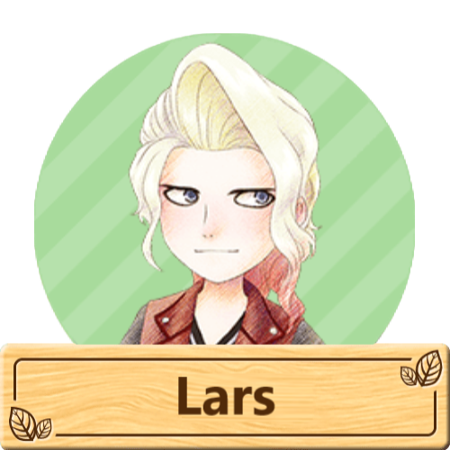
"El hermano menor de Clemen. Ayuda en la tienda de herramientas... a veces. Se enamoró de Beth a primera vista y se entregó por completo a ella. Tiene gratos recuerdos de su infancia, cuando comía castañas con su hermano".
Lars es un personaje de Story of Seasons: Pioneers of Olive Town.
Es un joven que en ocasiones ayuda a su hermano Clemens a llevar la tienda de herramientas. Mientras que Clemens se especializa en herramientas, Lars se especializa en motocicletas. Con el tiempo, él se encargará de todas las reparaciones de la motocicleta averiada del jugador.
Es el mejor amigo de Damon , a quien considera casi como un segundo hermano. También tiene una relación con Beth, de quien se enamoró a primera vista. Le gusta leer, escuchar música y todo lo que tenga que ver con las motocicletas.
"Un hombre que vive en Oasis Terracota. Ejerció la medicina en un gran hospital metropolitano, pero finalmente decidió mudarse a Oak Tree Town y establecer su consultorio, pero por motivos propios decidio mudarse a Oasis Terracota".
Marian es un personaje que regresa en Story of Seasons: Pioneers of Olive Town, originalmente era un personaje de Story of Seasons. Se desbloquea tras conseguir el pase de expanción.
Un médico cuya clínica está en el Gremio. Marian se encuentra en una posición única, pues comprende las circunstancias tanto de hombres como de mujeres. La gente le confía muchos asuntos, como moda, consejos amorosos y otros problemas. Marian formó la "Alianza de los Hermosos Soñadores" con Giorgio.
Víctor
"El marido de Gloria y alcalde de la ciudad Oliva. Suele estar deambulando por la ciudad, dando lo mejor de sí para mantener contentos a sus residentes. Sueña con convertir su ciudad en un famoso destino turístico. Los melones jugosos son su fruta favorita".
Víctor es un personaje de Story of Seasons: Pioneers of Olive Town.
Víctor es una persona muy amable y es la persona más importante de la ciudad Oliva. Al ser el alcalde, constantemente sueña con un futuro brillante y mejor para la ciudad y para todos los habitantes de la misma. Está muy orgulloso de la ciudad Oliva y le apasiona convertirla en uno de los mejores destinos turísticos dinámicos.
Siempre busca mejorar la ciudad, por lo que implementa un tablón de peticiones ubicado en el ayuntamiento para que los habitantes de la ciudad puedan ayudarse mutuamente y conseguir donaciones para mejorar la ciudad.
Cindy
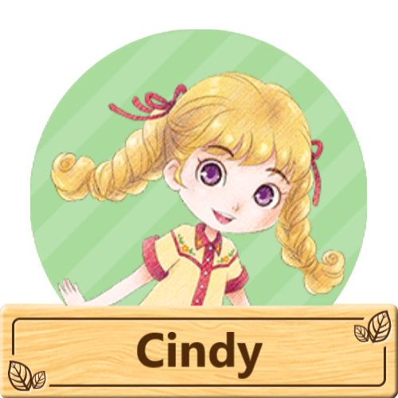
"La hermana menor de Jack. Quiere heredar la tienda y ser tan servicial con todos como su madre. Es inteligente y madura para su edad, pero como cualquier niño, tiene debilidad por los dulces, como el flan de miel".
Cindy es un personaje de Story of Seasons: Pioneers of Olive Town.
Cindy es la hija de Ángela y la hermana menor de Jack. Aunque es joven, desea poder ayudar más en la tienda de la familia y a menudo se le ocurren ideas de nuevos productos para vender. Quiere hacerse cargo del negocio familiar algún día cuando sea mayor.
Tiene más o menos la misma edad que Mikey y los dos suelen jugar juntos. Dosetsu le da clases particulares y disfruta regando las flores que hay fuera de la Floristería Nguyen con Linh. Con la ayuda de Mikey, ayuda a organizar la búsqueda anual de setas.
Clemens
"El hermano mayor de Lars es muy amable. Es el dueño de la tienda de herramientas. Es de una región donde hay nieve, así que cuanto más frío hace, más animado está. Le encanta el sabor nostálgico de las castañas, le recuerdan a las que comía a la parrilla en su tierra natal".
Clemens es un personaje de Story of Seasons: Pioneers of Olive Town.
Clemens es el dueño de la tienda de herramientas, que dirige con la ayuda de su hermano menor Lars . Clemens mejorará las herramientas y la mochila del jugador. También le dará al jugador un cubo para usar en el drenaje de charcos y estanques. Cuando la motocicleta del jugador esté reparada, Clemens ofrecerá servicios para pintar la motocicleta de un nuevo color.
Pasa la mayor parte de su tiempo en la tienda de herramientas. Está enamorado de Misaki y pasa su día libre en su restaurante. Creció en un clima mucho más frío, por lo que prospera en temperaturas más frías. Organiza la celebración de Snowshine en invierno y compite en el evento Verbena Estival todos los años.
Jessie
"La abuela de Jack. Originalmente dirigía el bazar de ciudad Oliva con Simon antes de dejar que Ángela la heredara. Está aprovechando al máximo su jubilación leyendo, paseando y bordando. Tiene debilidad por el pudín de miel".
Jessie es un personaje de Story of Seasons: Pioneers of Olive Town.
Es una anciana muy amable y también es una de las desarrolladoras originales de la ciudad Oliva, junto con su esposo Simon, Nguyen y el abuelo del jugador. Está muy orgullosa de la ciudad y está muy emocionada de verla convertirse en algo aún más grande de lo que era
Siempre que sale de casa para pasear, se la ve junto a su esposo Simon. Los dos suelen caminar hacia el mirador del acantilado que se encuentra ubicado en el bosque. Cuando está en su casa, se pone a tejer y a pasar tiempo con su querida familia.
Ella vive en la parte trasera del bazar con el resto de su familia, incluida su hija Ángela y sus nietos Jack y Cindy.
Este festival te desafía a pescar el pez más grande durante el límite de tiempo del festival. Ingresa a la ciudad Oliva entre las 10:00 am y las 7:00 pm para participar en el torneo, luego dirígete al área de la playa para hablar con Norman para comenzar. Puedes colocar cebo de pesca en tu línea antes de que comience el concurso, pero no se utilizará durante el concurso; Terminarás el concurso con la misma cantidad de cebo que cuando empezaste.
Tienes 2 minutos (120 segundos) para pescar el pez más grande que puedas. Tendrás que lanzar tu línea en el océano y esperar tener la suerte de pescar un pez enorme. Mientras luchas contra los pescadores más extraordinarios de la ciudad, no vas a ganar con una miserable sardina. Tener una caña de pescar bien mejorada y una habilidad de pesca de rango 5 o superior te ayudará a asegurar tu victoria, ¡aunque no está garantizada!.
Este festival termina a las 19:00 horas.
Neil
"Un joven amante de los animales que solía tener una tienda de animales en su antiguo pueblo. Fue invitado a Cascada del viento por invitación de Dunhill. Le encantan los subproductos, en particular los huevos de sedosa de alta calidad".
Neil es un candidata a matrimonio que regresa en Story of Seasons: Pioneers of Olive Town, originalmente era un personaje de Harvest Moon: A New Beginning. Se desbloquea tras conseguir el pase de expanción.
Un joven distante que prefiere la compañía de los animales a la de las personas. Su fachada de rudeza se desvanece cuando está cerca de los animales, revelando su lado más tierno. Le encanta la comida picante y le gusta tocar la guitarra en su tiempo libre.
Cuando Dunhill decidió dejar Echo Town y viajar, invitó a Neil a acompañarlo. Aunque al principio se sintió aprensivo, Neil finalmente decidió acompañar a Dunhill para no viajar solo. Finalmente, ambos llegaron a Cascada del viento. Vive en su propia casa con un gallinero adjunto.
Neil tenía una tienda de animales en su pueblo anterior, pero la cerró temporalmente durante su ausencia. A menudo le escribe a su amigo Rod, quien cuida de sus animales mientras él está fuera.
Jeanne
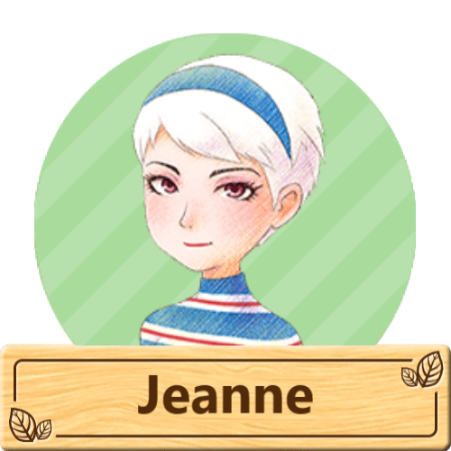
"Una esteticista que trabaja en el salón de belleza. Llegó a la ciudad Oliva para seguir los pasos de Karina, a quien respeta como mentora. Le encanta el rico sabor y la dulzura del chocolate".
Jeanne es un personaje de Story of Seasons: Pioneers of Olive Town.
Es una esteticista que llegó a la ciudad Oliva por petición de Karina. Jeanne solo aparecerá una vez que el jugador haya ampliado con éxito el salón de belleza de Karina, y será la encargada de manejar el Spa el cual se puede usar para que el jugador pueda editar la apariencia física y la voz de su personaje.
Jeanne es una mujer muy simpática y despreocupada. Al igual que Reina, siempre busca pasar un buen rato, aunque también le apasiona su trabajo en el salon de belleza. Tiene un buen ojo para la moda y está al tanto de todas las últimas tendencias. Vivirá junto a Karina en la parte trasera del salón de belleza.
Debido a que Jeanne no es residente de la ciudad Oliva y vino por petición de Karina, ella no tiene ningun familiar en la ciudad por lo que su unico conocido es la propia Karina.
Nigel
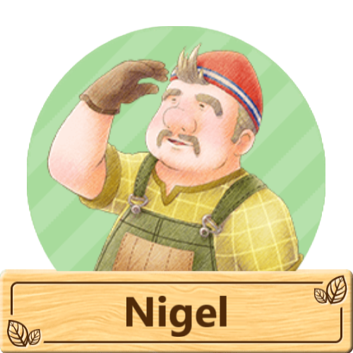
"El padre de Ralph. Un carpintero que trabaja solo en la mayoría de los edificios de la ciudad Oliva. Su trabajo es muy solicitado por su calidad y durabilidad. Por lo general, prefiere comer comidas sencillas, como sándwiches".
Nigel es un personaje de Story of Seasons: Pioneers of Olive Town.
Nigel es el padre de Ralph y trabaja en la ciudad Oliva como carpintero. Debido a su habilidad con la madera el es muy solicitado en la ciudad para realisar trabajos de remodelación o elaboración de muebles. Nigel es una persona amable y dedicada.
Se sabe muy poco lo que le paso a su esposa por lo que se entiende que el estuvo criando a su hijo solo, ademas siente algo por Misaki y trata de confesar sus sentimientos hacia ella pero debido a que siempre se pone nervioso al momento de hacerlo termina arruinandolo o algo inesperado lo arruina y no logra hacerlo debido a eso.
Ayuda a fabricar los fuegos artificiales para el festival anual de fuegos artificiales.
Damon
"Suele pasear en motocicleta, pero en secreto ayuda en la tienda de animales. Le encantan las leyendas sobre las estrellas y contempla el cielo nocturno todas las noches. Le gusta coleccionar joyas para crear accesorios".
Damon es un candidato a matrimonio en Story of Seasons: Pioneers of Olive Town.
Damon es el hermano menor de Bridget e hijo de Patricia y Georg. Damon vive con su familia en una tienda de animales. Aunque no le importa admitirlo, a Damon le gustan los animales y sabe cómo cuidarlos. Sin embargo, Damon desea ser su propia persona y no quiere trabajar en el negocio familiar. Damon es distante en la superficie, pero se abre a las personas que le importan.
Le gusta crear accesorios con gemas y piedras. Es el mejor amigo de Lars , que es como un hermano para él. Tiene como pasatiempo andar en motocicleta y le gusta mirar las estrellas a altas horas de la noche. También disfruta mucho tomando café.
Gloria
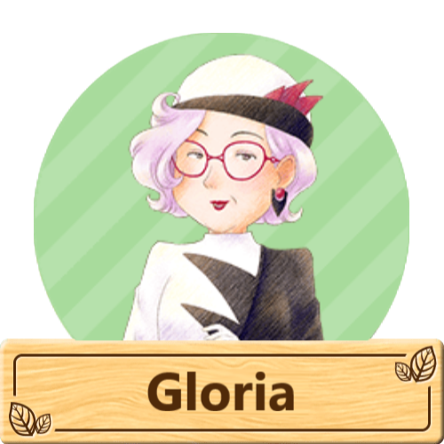
"La esposa de Víctor. La veterana conservadora del Museo del Olivo. Parece que se mudó aquí después de que comenzara el estudio de las ruinas cercanas a la ciudad. Le encantan las fresas, especialmente las variedades raras de otras partes del mundo".
Gloria es un personaje de Story of Seasons: Pioneers of Olive Town.
Gloria está casada con el alcalde de la ciudad Oliva, Víctor , y es la curadora del museo de la ciudad Oliva. Es una mujer sofisticada y sensata. Gloria comparte el amor de su marido por la ciudad Oliva y siempre lo apoya. Ha contratado a Reina y Beth para que la ayuden a gestionar sin problemas el museo.
Cuando el jugador visite el museo por primera vez, Gloria le regalará una cámara para tomar fotografías de la vida salvaje local. También le pedirá donaciones al jugador en forma de tesoros, peces y fotografías de animales salvajes para exhibir en el museo. Hable con Gloria detrás del mostrador mientras el museo esté abierto para hacer una donación.
Sally
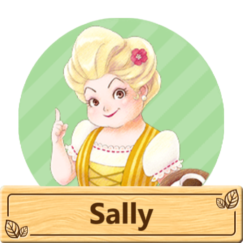
"La madre de Blaire. Propietaria del café. Una pastelera experta que ha estado perfeccionando sus habilidades en el arte del café con leche. ¡A los clientes habituales del café les encanta! Disfruta de la mermelada de naranja y suele usarla como ingrediente secreto en sus platos".
Sally es un personaje de Story of Seasons: Pioneers of Olive Town.
La confiable anfitriona del Gull's Rest Café. Está muy orgullosa de su habilidad para preparar un excelente café. Es muy trabajadora y pasa su único día libre con sus tres mejores amigas: Angela, Manuela y Patricia.
Este festival helado todos se reúnen en el corazón de la ciudad y familias y amigos se unen para mostrar las habilidades artísticas de las distintas familias de la ciudad Oliva. Ingresa al pueblo entre las 10:00 am y las 7:00 pm, donde encontrarás a los pobladores alrededor de la playa y la zona del muelle turístico. Tendrás la oportunidad de ver las esculturas con cualquier candidato con el que estés saliendo o casado. También puedes sentarte junto a la hoguera y disfrutar de una charla con los demás.
Raúl
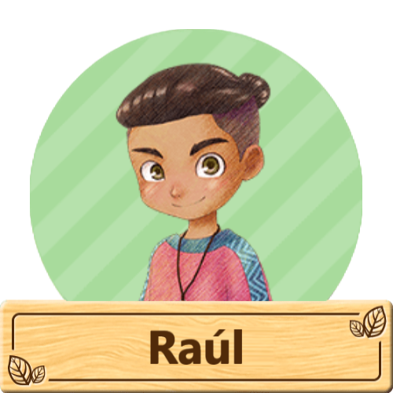
"Un amigo íntimo de Emilio, a quien trata como si fuera de la familia. Un aprendiz de pescador educado. Marcos lo adoptó como su protector después de haber estado interesado durante mucho tiempo en la pesca. Le encanta la mayonesa y piensa que sabe bien con cualquier cosa".
Raúl es un personaje de Story of Seasons: Pioneers of Olive Town.
Raúl es un chico de carácter bondadoso y de buen corazón que vive junto a sus familiares en la ciudad Oliva para aprender todo acerca de cómo ser un buen pescador a través de las enseñanzas de Marcos. Está entusiasmado por aprender a ser pescador y le encanta estar en el barco. Además, es muy cercano a Emilio, a tal punto que lo ve como un verdadero hermano mayor.
Iori
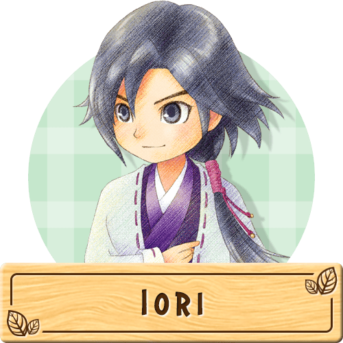
"Un joven de una tierra lejana que vive con su sirviente, Dosetsu. Disfruta de las pequeñas bendiciones de la naturaleza, como el susurro de las hojas en el viento. Ama el otoño por sus hongos matsutake".
Iori es un candidato a matrimonio en Story of Seasons: Pioneers of Olive Town.
Iori es un joven que vive con su sirviente, Dosetsu. Proviene de una isla lejana y alguna vez fue algo similar a un duque. A lo largo de los acontecimientos, se descubre que Iori necesitaba alejarse de sus responsabilidades y se fue a la ciudad Oliva para escapar.
Aunque estaba acostumbrado a vivir una vida de lujo antes de mudarse a la ciudad Oliva, Iori es educado y amable con todos, y siempre se dirige a la gente de manera formal. También es amable con los animales y ama la naturaleza.
Tiene talento y pasión por la pesca. A menudo se lo puede ver pescando en el muelle de la playa del pueblo y participa en el torneo anual de pesca.